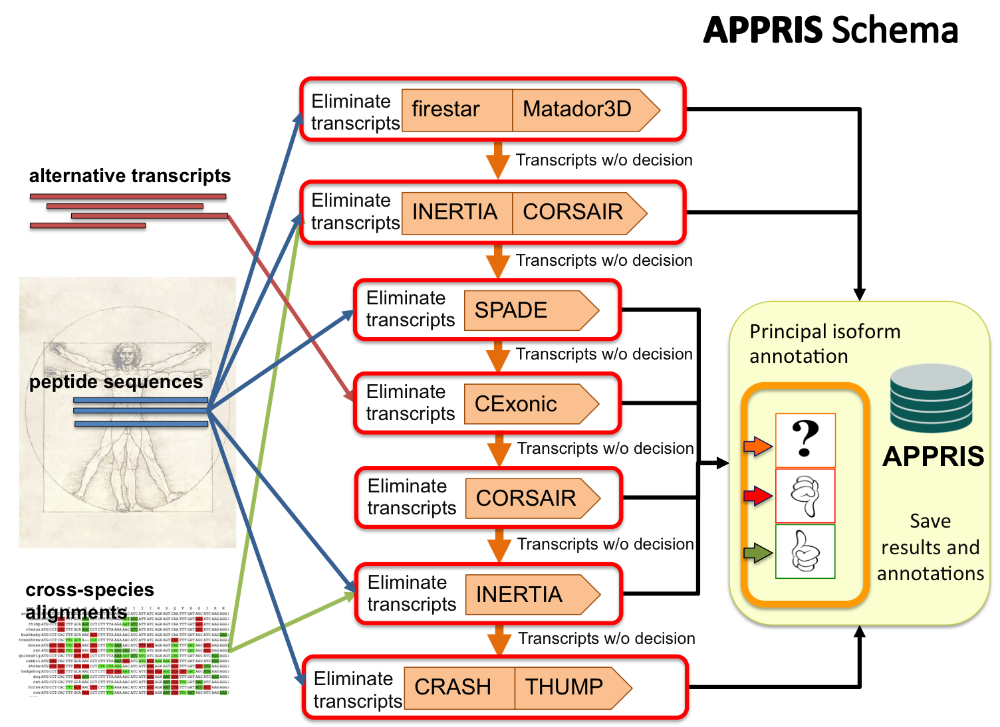

Alternative splicing generates different gene products. Recent studies have estimated that almost 100% of multi-exon human genes produce differently spliced mRNAs. It is important to designate one of the isoforms as the "principal" functional isoform in order to predict the changes in function, structure or localisation brought about by Alternative Splicing.
APPRIS combines protein structural information, functionally important residues, conservation of exonic structure and evidence of non-neutral evolution to make automatic annotations of principal functional isoforms.
The server is being used in the context of part of the scale up of the ENCODE project to annotate 100% of the human genome (22,304 genes and 72,731 transcripts from Gencode3c, Ensembl56).

APPRIS automates a range of computational methods used to define principal functional variants based on the Principal Variant Pipeline (protein functional, structural and evolutionary information).
The short term goal of the pipeline is to begin to select the primary transcript for each gene based on a range of complementary methods. One side-effect of this is that we also can help validate the annotated transcripts.
The methods of the pipeline are the following:
Functional residues are highly conserved, even across large evolutionary distances. Since these residues are unlikely to have arisen by chance we can use this to help determine the principal isoform. firestar [2] predicts functionally important residues based on the fireDB database. The predictions are based on the local evaluation of alignments between the query sequence and the structures with functional information that are stored in fireDB. firestar allows many alignment formats, including pairwise alignments with PSI-BLAST, multiple alignments with MUSCLE and structural alignments with LGA. The reliability of predictions is assessed with SQUARE and the functional information is highlighted along with a reliability score.
Variants that have "lost" conserved functional residues are eliminated as potential principal isoforms.
Its web server is http://firedb.bioinfo.cnio.es/Php/FireStar.php
Go to the TopVariants with large inserts or deletions relative to their crystal structures are also not likely to be the principal isoform. Since protein structure is much more conserved than sequence this applies to all proteins that can be mapped reliably to PDB structures.
Protein structural information is analysed with Matador-3D
In practice variant sequences from the same gene are mapped onto 3D structures by running BLAST against the PDB. Those variants that introduce gaps are eliminated as potential principal isoforms.
Go to the TopHere we were looking for exons that have neutral evolutionary rates. The principal isoform is not likely to contain exons that are evolving abnormally quickly or unusual selective pressures.
Transcripts are aligned against 46 vertebrate species using MAF, PRANK, and Kalign to limit alignment errors. Evolutionary rates of exons from the same gene are contrasted using SLR to flag whole exons that have non-neutral evolutionary rates.Variants with differently evolving exons are eliminated as potential principal isoforms.
Inertia is the service that covers the rage of methods.
Go to the TopAPPRIS also carries out BLAST searches against vertebrates to determine the most likely principal isoform.
Transcripts conserved over greater evolutionary distances are more likely to be the principal variant.
The number of species that align correctly and without gaps are calculated for each variant.
Go to the TopProteins are generally comprised of one or more functional regions commonly termed domains. Identifying the domains present in a variant can provide insights into the function and to determine the most likely principal isoform.
Presence of protein domain is analysed with Pfamscan, http://pfam.sanger.ac.uk
Variants that have "lost" conserved protein domains are eliminated as potential principal isoforms.
Go to the TopTranscription data are frequently being used to study alternative splicing in one species. However, splicing isoforms may be conserved between species of a certain evolutionary distance. Therefore, cross-species comparison of splicing isoforms may provide insight into the conservation of alternative splicing. The assessment of functional alternative splicing requires the identification of the gene product that retains the core biological function. The conservation of exonic structure between orthologous splicing isoforms of two species (human-mouse) would suggest that they exist in both species and that their biological function may be conserved.
The conservation of exonic structure between orthologous splice isoforms of two species would suggest that they exist in both species and that their biological function may be conserved.
If one transcript does not have conserved exonic structure, while all the rest have, this not likely to be the principal isoform, so will be eliminated.
Conservation of exonic structure is analysed with CExonic (http://cexonic.bioinfo.cnio.es).
Go to the TopThe presence and location of signal peptides and cleavage sites in amino acid sequences are analysed with SignalP program. And TargetP service that predicts the sub-cellular location of eukaryotic proteins. CRASH method is make upt by these methods.
Go to the TopAPPRIS includes a method that makes unanimous predictions of trans-membrane helices using three different methods: MEMSAT 3.0, Phobius, and PRODIV.
Transcripts that have "lost" trans-membrane helices relative to other transcripts from the same gene are eliminated as the principal isoform.
Go to the Top